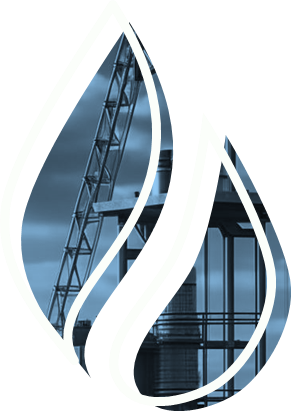

Эксплуатация и ремонт силового электрооборудования
На главнуюИзучите материал об эксплуатации и ремонте силового электрооборудования. Чтобы перейти к учебному материалу, кликайте на блоки с текстом
Список рекомендованнойлитературы

- Смоленцев, В.И. Электрические машины и аппараты: учебное пособие / В. И. Смоленцев. - Ростов-на-Дону: Феникс, 2020. - 182 [7] с. – (Среднее профессиональное образование). -ISBN 978-5-222- 32940-5. - Текст: непосредственный.
- Бычков, А.В. Эксплуатация и ремонт электрооборудования промышленных и гражданских зданий: учебник для студентов учреждений среднего профессионального образования / Бычков А.В., Савватеев А.С., Бычкова О.М. –Москва: Академия, 2021. – 192 с. - SBN 978-5-4468-9664-6. - Текст : непосредственный.
- Игнатович, В. М. Электрические машины и трансформаторы : учебное пособие для среднего профессионального образования / В. М. Игнатович, Ш. С. Ройз. — 6-е изд., испр. и доп. — Москва : Издательство Юрайт, 2022. — 181 с. — (Профессиональное образование). — ISBN 978-5-534-00798-5. — Текст : электронный // Образовательная платформа Юрайт [сайт]. — URL: https://urait.ru/bcode/491141
- Полищук, В. И. Эксплуатация, диагностика и ремонт электрооборудования: учебное пособие / В.И. Полищук. — Москва: ИНФРА-М, 2021. — 203 с.: ил. - (Среднее профессиональное образование). - ISBN 978-5-16-016457-1. - Текст: электронный. - URL: https://znanium.com/catalog/product/1150957
- Правила по охране труда при эксплуатации электроустановок. — 2-е изд., перераб. и доп. — Москва: ИНФРА-М, 2020. — 138 с. - ISBN 978-5-16-012097-3. - Текст: электронный. - URL: https://znanium.com/catalog/product/1052365